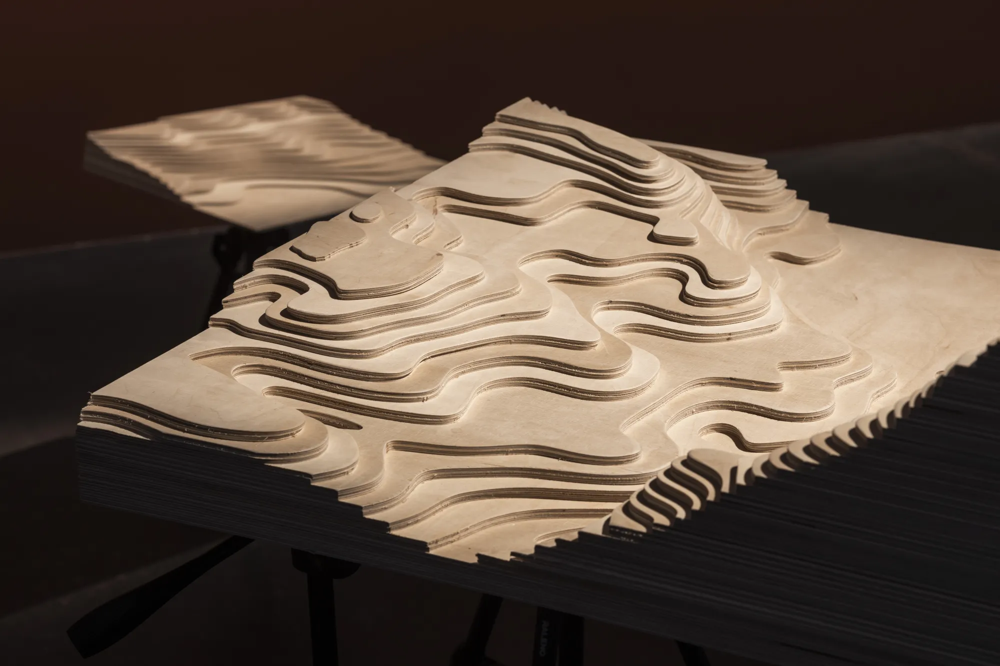
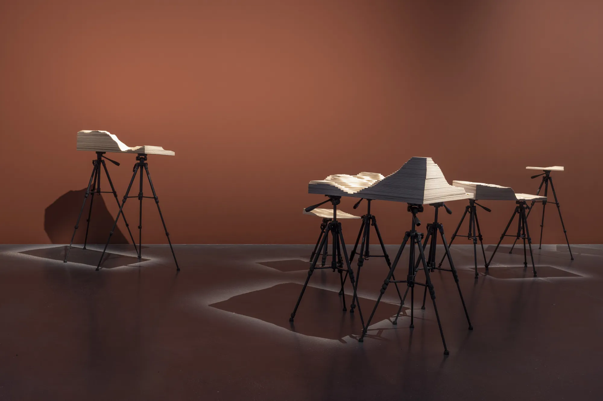
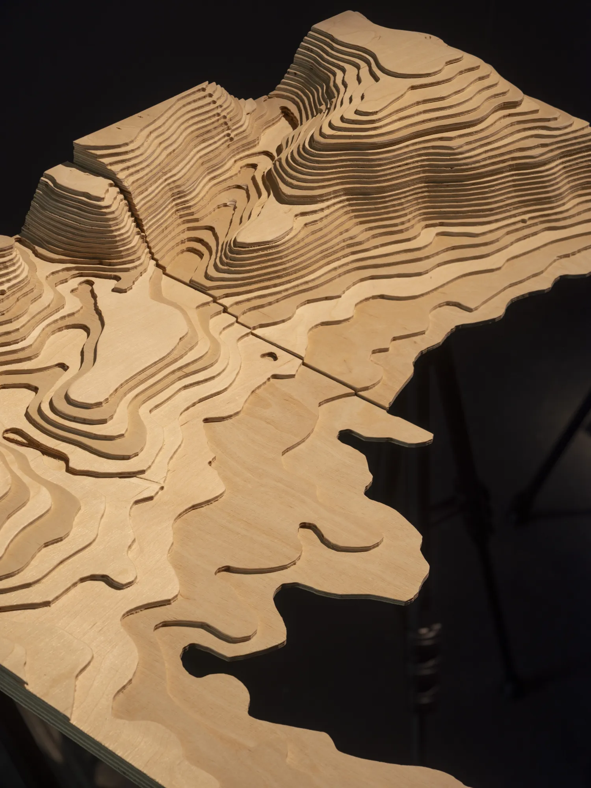
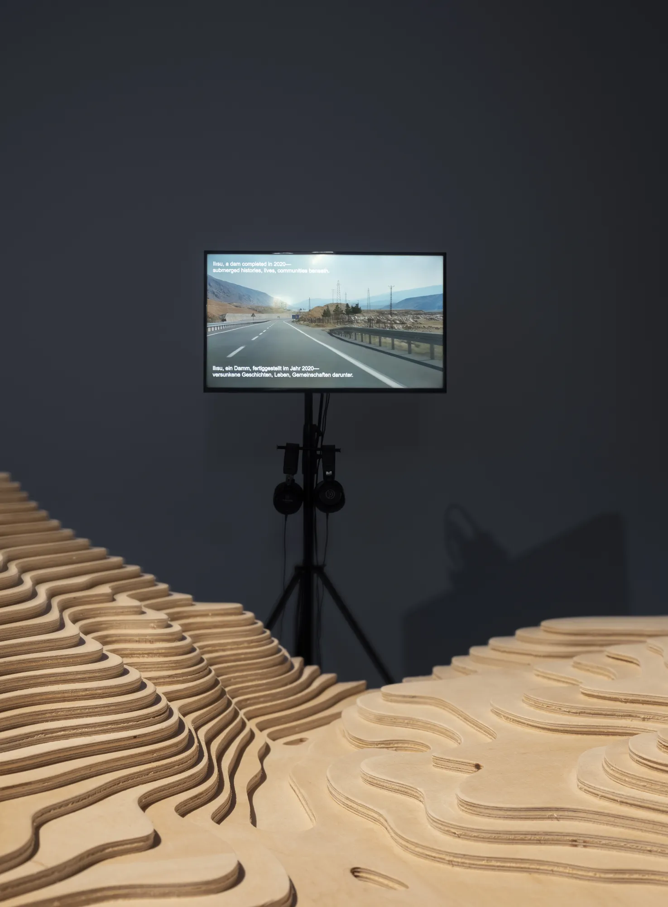
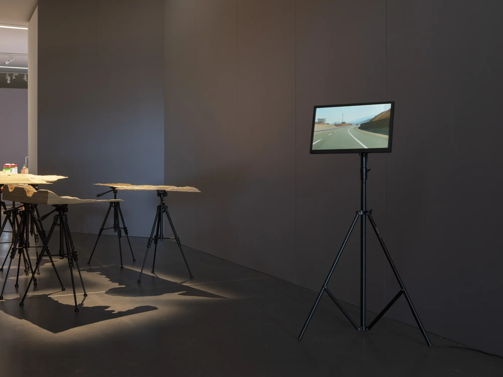
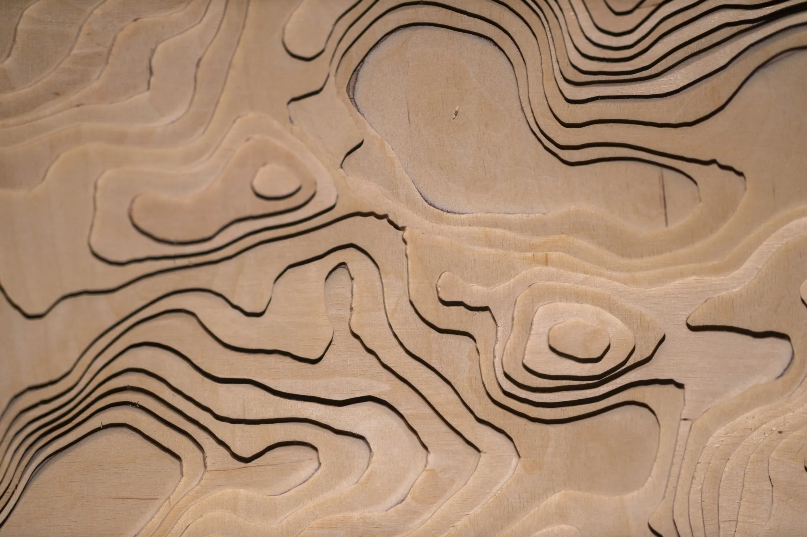
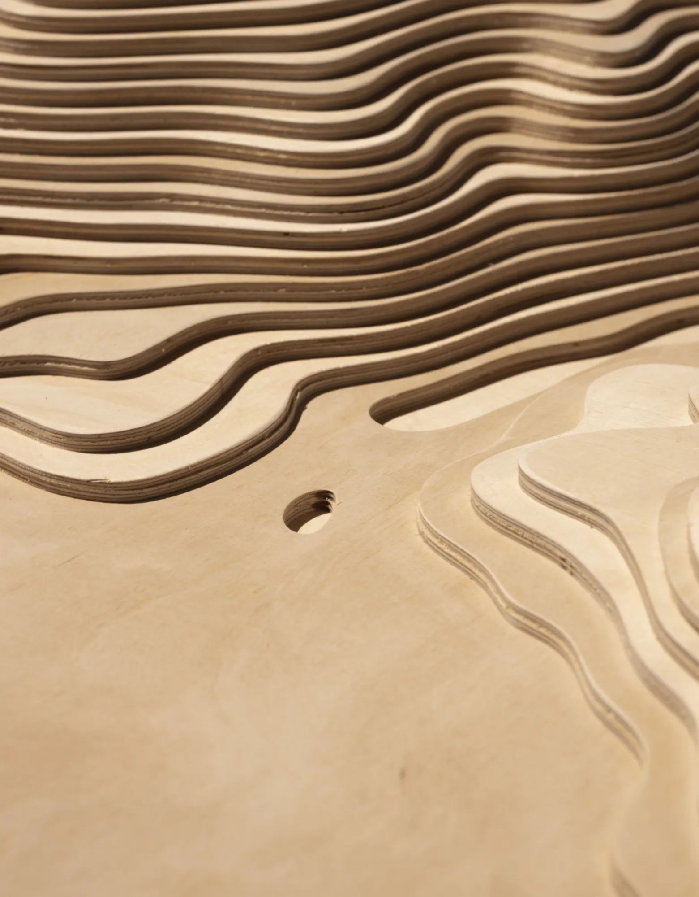
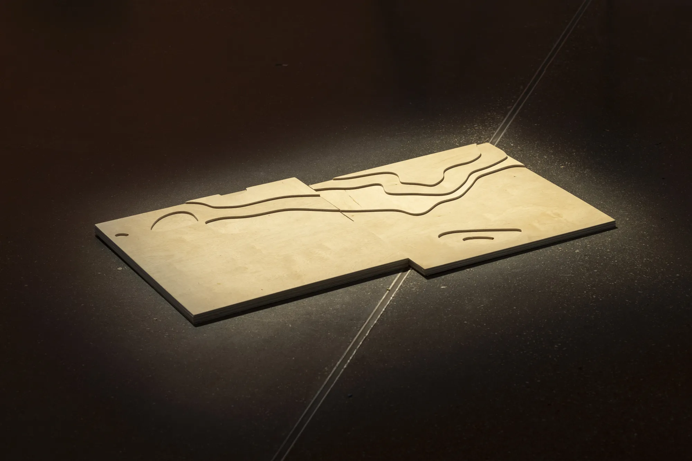
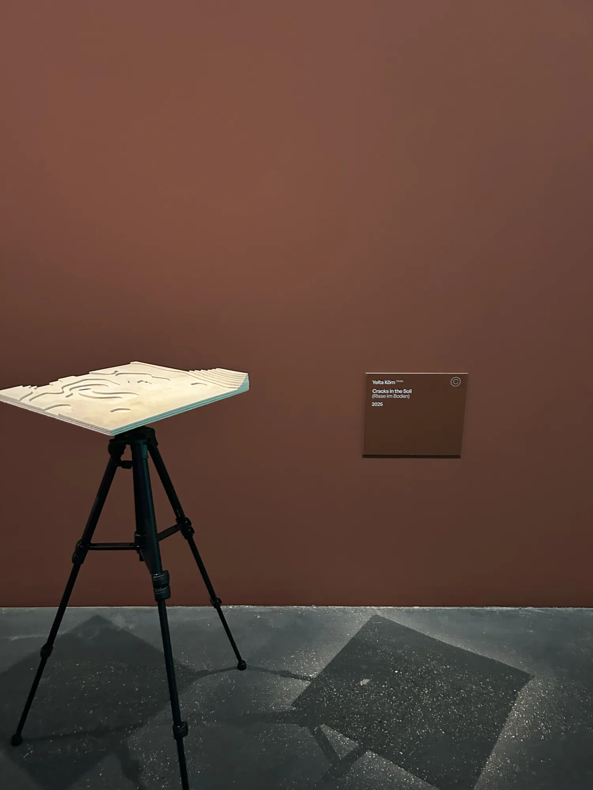

25012025
Cracks in the Soil
Installation, Video, Counter-mappingKunstmuseum Moritzburg Halle (Saale) and Werkleitz- About
- Installation of table-like landscape models fragmented by infrastructures and borders, with archival material, field recordings, a video essay and speculative maps from the Tigris and Euphrates region of southeast Türkiye.
- Place
- Halle (Saale)
- Shown
- 23.05.–14.09.2025Planetary Peasants (Planetarische Bauern), Kunstmuseum Moritzburg Halle (Saale), Halle (Saale), curated by Övül Ö. Durmuşoğlu, Joanna Warsza (Kunstmuseum Moritzburg); Daniel Herrmann, Alexander Klose, Edit Molnár, Marcel Schwierin (Werkleitz)
- Links
- Werkleitz ↗
Original ↗









Press
- 05.2025Agriculture, War, and Revolution: 'Planetary Peasants' Unite!Holo
- 2025Cracks in the Soil ↗Werkleitz
- 2025Yelta Köm (artist page, Planetarische Bauern) ↗Werkleitz
- 2025Breakthrough to the Ground of the Planetary SoulTexte zur Kunst